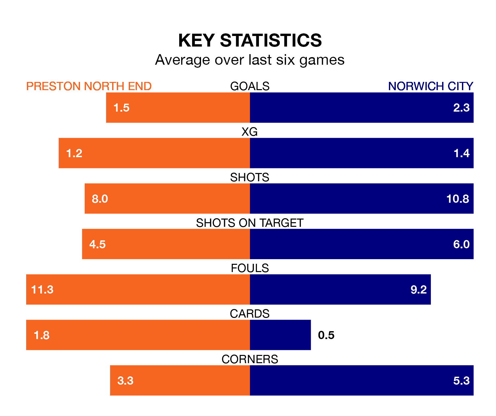

Preston North End host Norwich City on Saturday at Deepdale in EFL Championship.
In their last league match, on Tuesday, Preston beat Huddersfield Town 4-1 at home, with goals from Milutin Osmajić (three) and Will Keane.
Norwich drew, 2-2 away at Sheffield Wednesday, with Borja Sainz Eguskiza and Joshua Sargent on the scoresheet.
With 75 goals in 42 games so far this season, Norwich are scoring more than average in the league with 1.8 goals per game. But they are conceding more than average too, letting in 60 goals at a rate of 1.4 per game.
Preston are also above average scorers, with 1.4 goals per game, compared to a league average of 1.3. They have also conceded 1.4 goals per game.
In the last 10 years, Preston and Norwich have played each other on 13 occasions. They won four each, and they drew five times.
On average, the Lilywhites scored 1.2 goals and the Canaries 1.5 in those matches.
Their last meeting was on December 9, when they played out a 0-0 draw.
City are sixth in the table after 42 games, of which they have won 20 and drawn eight, earning 68 points.
North End are two places behind the Canaries in eighth, with 18 wins and nine draws putting them on 63 points.
In Sargent, the away team have one of the league's sharpest shooters so far this season. He has notched 15 goals in 22 appearances, to sit fifth in the scoring charts.
His goal rate of one every 101 minutes is quicker than that of Keane, the Lilywhites' top scorer with a goal every 173 minutes, and a total of 13 goals in 33 games.
The hosts are in mixed form in EFL Championship, with three wins and a draw from their last six games.
With four wins and a draw over that period, Norwich's form is better – they have taken 13 points from 18, compared to Preston's 10.
Updated: 10:01 (UTC), 12/04/24